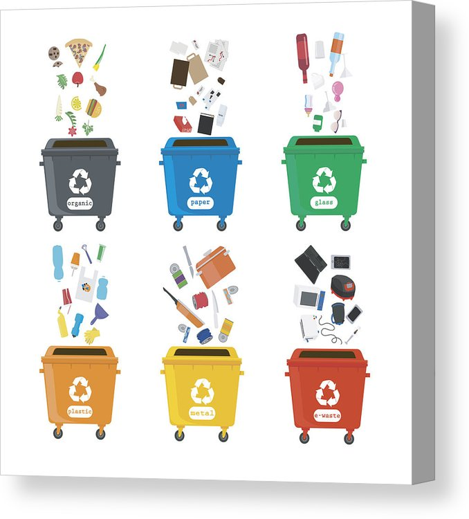

Крок
Площадки для розділення сміття
Сортування сміття (відходів) — процес, при якому відходи
поділяються на різні групи.
Сортування відходів може відбуватися вручну в побуті
за допомогою схеми роздільного збору, або автоматично розділятись в місцях
відновлення матеріалів або системах механічного біологічного очищення.
Сортування відходів також відбувається у місцях переробки сміття.Сортування сміття (відходів) — процес, при якому відходи
поділяються на різні групи.
Сортування відходів може відбуватися вручну в побуті
за допомогою схеми роздільного збору, або автоматично розділятись в місцях
відновлення матеріалів або системах механічного біологічного очищення.
Сортування відходів також відбувається у місцях переробки сміття.
Сегрегація (розділення) відходів — поділ відходів на сухі та вологі.
Сухі відходи включають папір, картон, скло, бляшанки тощо. Вологі відходи,
в свою чергу, включають органічні відходи, такі як шкірки від овочів, залишки їжі
Сегрегація (розділення) відходів — поділ відходів на сухі та вологі.
Сухі відходи включають папір, картон, скло, бляшанки тощо. Вологі відходи,
в свою чергу, включають органічні відходи, такі як шкірки від овочів, залишки їжі